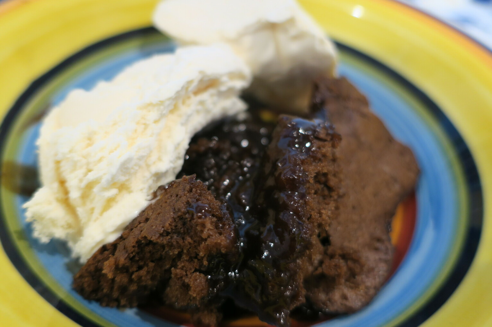

Choc Self Saucing Pudding
 Meat
Meat

1 cupself-raising flour1/3 cupsugar3 tbspcocoasomesalt
Mix self-raising flour sugar cocoa salt together
1/2 cupmilk1/2 cupmelted butter1egg1 tspvanilla
Add milk melted butter egg vanilla and mix in
Add to baking tray
1/2 cupbrown sugar3 tbspcocoa
Mix together the brown sugar cocoa and sprinkle on top
1 cupboiling water
Gently add boiling water on top to disolve sauce
Bake for 20-30mins
Serve with ice-cream while hot